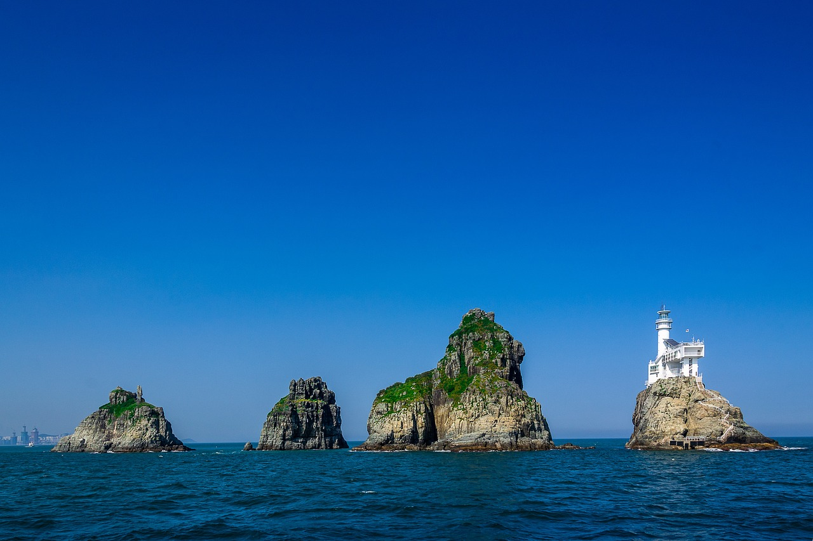
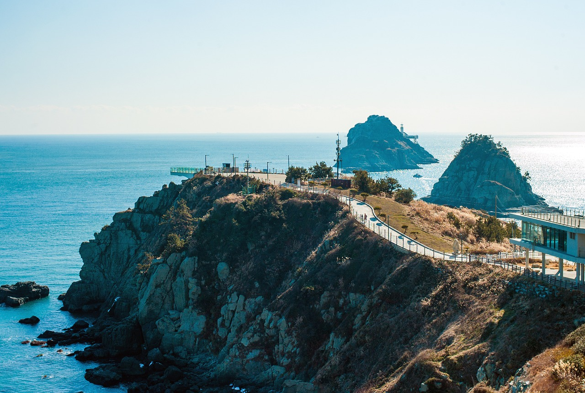
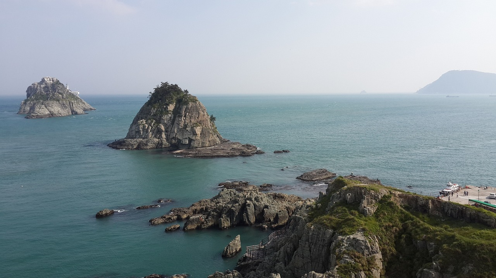

건강한 삶을 위한 기본지식 창고
건강한 삶을 위한 기본지식 창고 지비츠,문구류는 바로여기
지비츠,문구류는 바로여기

오륙도(五六島)는 부산광역시 남구 용호동에 있는 우암반도 남동단에서 동남 방향으로 600m 지점 해상에 있는 섬이다. 부산광역시의 문장으로 부산의 상징 중 하나이기도 하다. 육지와 가까운 순서대로, 방패섬, 솔섬, 수리섬, 송곳섬, 굴섬, 등대섬 이렇게 6개 섬으로 이루어져 있다. 과거 해식대로 연결된 방패섬과 솔섬을 합쳐 우삭도로 부르고 있었으나, 2011년 무인도 지명 정비사업으로 현재의 이름으로 정리되었다
오륙도라는 지명의 유래를 살펴보면, 1740년(영조 16) 동래부사(東萊府使) 박사창(朴師昌)이 편찬한 동래부지(東萊府誌)의 산천조(山川條)에 '五六島在絶影島東, 峯巒奇在列立海中, 自東觀之則爲六峯, 自西觀之則爲五峯, 故名之以此. 第三峯 有 唐將 萬世德碑'라는 문구가 있다. 즉 동에서 보면 6개 봉우리로 보이고, 서에서 보면 5개 봉우리로 보여 오륙도로 불린다고 지명의 유래를 기록하고 있다. 보는 각도에 따라 오륙도의 봉우리 수가 달리 보이는데, 예를 들어 영도에서 오륙도를 보면 5개 봉우리(방패섬 솔섬 수리섬 송곳섬 굴섬)로 보이고, 해운대 달맞이고개에서 보면 6개 봉우리(방패섬 솔섬 수리섬 송곳섬 굴섬 등대섬)로 보인다. 초량왜관에서 조선어 통역을 한 대마도 출신 오다이쿠고로오(小田幾五郞, 1755년출생, 1832년 사망)가 쓴 초량화집(草梁話集, 1825년)에는 밀물과 썰물에 따라 오륙도가 5개 또는 6개로 보인다는 내용이 있다. 행정 구역상 부산광역시 남구 용호동 936번지에 속한다.
오륙도 등대는 육지에서 가장 멀리 떨어진 등대섬에 있다. 등대는 1937년 11월에 일제강점기에 처음 설치되었으며, 당시 6.2m이던 등탑은 1998년 27.5m 높이로 최초 시민현상 설계공모를 통해 '자연과 인공의 극적인 만남'라는 주제로 건립되었다. 10초에 1회 반짝이는 흰색 섬광이 도달하는 거리는 21마일, 40km에 이른다. 대마도에서도 오륙도 등대 불빛이 보인다. 해가 날 때는 태양열로 충전하고 해가 가린 날이나 장마철에는 발전기 2대를 교대로 가동한다. 누구든 등대 구경이 가능하며, 등대전시관도 있다. 국내외 등대 역사를 알려 주는 사진과 1930년대 등대 공사 당시 자재 일부를 전시하고 있다. 관광객이나 낚시꾼에게 화장실을 개방하고 있다.